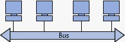
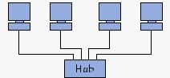

First slide label
Some representative placeholder content for the first slide.

Second slide label
Some representative placeholder content for the second slide.

Third slide label
Some representative placeholder content for the third slide.

Third slide label
Some representative placeholder content for the third slide.

Third slide label
Some representative placeholder content for the third slide.

Third slide label
Some representative placeholder content for the third slide.

Third slide label
Some representative placeholder content for the third slide.

Third slide label
Some representative placeholder content for the third slide.
¿Qué es una red?
29 de febrero de 2024 por: Anderson Javil MartinezEn informática, se entiende por red (usualmente red informática o red de computadoras) a la interconexión de un número determinado de computadores (o de redes, a su vez) mediante dispositivos alámbricos o inalámbricos que, mediante impulsos eléctricos, ondas electromagnéticas u otros medios físicos, les permiten enviar y recibir información en paquetes de datos, compartir sus recursos y actuar como un conjunto organizado. Las redes cuentan con procesos de emisión y recepción de mensajes, así como de una serie de códigos y estándares que garantizan su comprensión por los computadores conectados a la red (y no por cualquier otro). A dichos estándares de comunicación se los conoce como protocolos, y el más común de ellos actualmente es el TCP/IP.
La construcción de una red permite administrar una comunicación interna, compartir la ejecución de programas o el acceso a Internet, e incluso la administración de periféricos como impresoras, escáneres, etc. Este tipo de sistemas de enjambre sostienen actualmente muchos de los procesos de administración y procesamiento de información en nuestros días, como son las redes de telecomunicaciones, la Internet o las diversas Intranet empresariales o de organizaciones varias.
¿Cómo funcionan las redes?
Las redes de computadoras conectan nodos como computadoras, enrutadores y conmutadores mediante cables, fibra óptica o señales inalámbricas. Esas conexiones permiten a los dispositivos de una red comunicarse y compartir información y recursos.
Las redes siguen protocolos, que definen cómo se envían y reciben las comunicaciones. Estos protocolos permiten la comunicación de dispositivos. Cada dispositivo en una red utiliza un Internet Protocol o dirección IP, una cadena de números que identifica de forma única un dispositivo y permite que otros lo reconozcan.
Los enrutadores son dispositivos físicos o virtuales que facilitan las comunicaciones entre diferentes redes. Los enrutadores analizan la información para determinar la mejor manera de que los datos lleguen a su destino final. Los conmutadores conectan dispositivos y administran la comunicación de nodo a nodo dentro de una red, asegurando que los paquetes de información que viajan a través de la red lleguen a su destino final.
Modelo OSI
Es una especie de estándar de la red, un marco de referencia para construir redes o dispositivos de red, no se lleva directamente a la práctica. El modelo OSI es un modelo de siete capas que describe las etapas de una conexión de red, desde que te conectas por primera vez; cómo se envían los datos, porque medio se envían, como sé reciben los datos, etc. Son siete capas, si en algún momento escuchas “capa 8” nos estamos refiriendo al usuario y en la tecnología es un chiste muy común hablar de capa 8 o “error de capa 8” cuando el usuario es quien ha cometido un error en el sistema. Como dije el modelo OSI solamente es teórico.
¿Por qué es importante el modelo OSI?
A pesar de que el Internet moderno no sigue estrictamente el modelo OSI (sigue más de cerca el paquete de protocolos de Internet más simple), este modelo sigue siendo muy útil para resolver problemas de red. Ya sea una persona que no puede lograr que su ordenador portátil se conecte a Internet o un sitio web que está caído para miles de usuarios, el modelo OSI puede ayudar a desintegrar el problema y aislar la fuente. Si el problema puede reducirse a una capa específica del modelo, se puede evitar mucho trabajo innecesario.
Conmutación
La conmutación es la posibilidad de conectar dos o más host a través de un dispositivo de red, por ejemplo: si yo quisiera conectar a dos computadoras, teóricamente podría ponerle un cable y conectarlas, pero sí necesito conectar 3, 4, 5 o más, ya no es tan sencillo como ponerles un cable, el asunto se vuelve más complejo, en este caso necesito es un switch. Un switch permite recibir un paquete de datos de un dispositivo, enviarlo a otro y repetir este proceso continuamente en toda una red local.
La conmutación usa las direcciones MAC. Las direcciones MAC son códigos alfanuméricos que vienen ya de fábrica en cada dispositivo y gracias a ellas el switch sabe a qué dispositivo enviar los datos.
Las redes locales se diseñan de manera jerárquica, es decir, no se pueden diseñar de manera horizontal porque son difíciles de escalar. Al diseñarlas de manera jerárquica pueden crecer fácilmente.